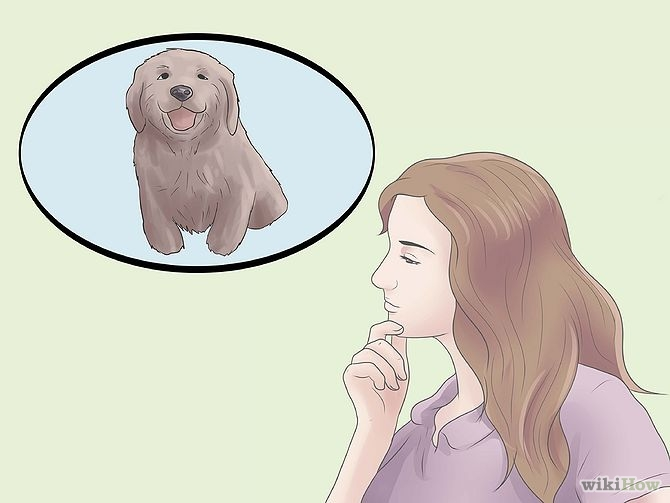
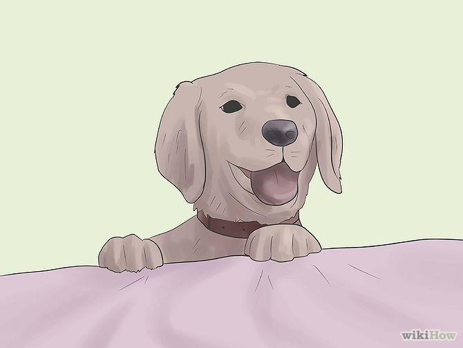
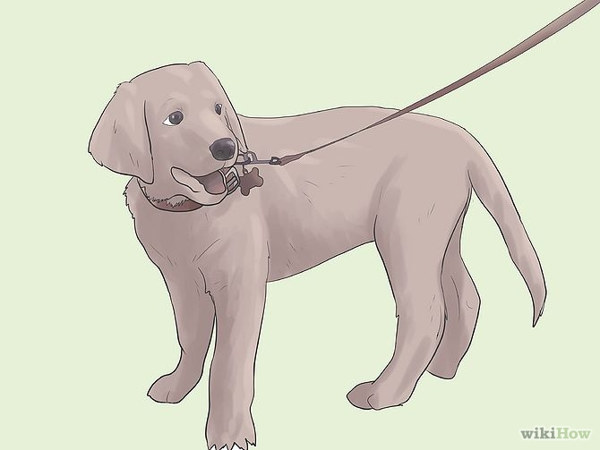
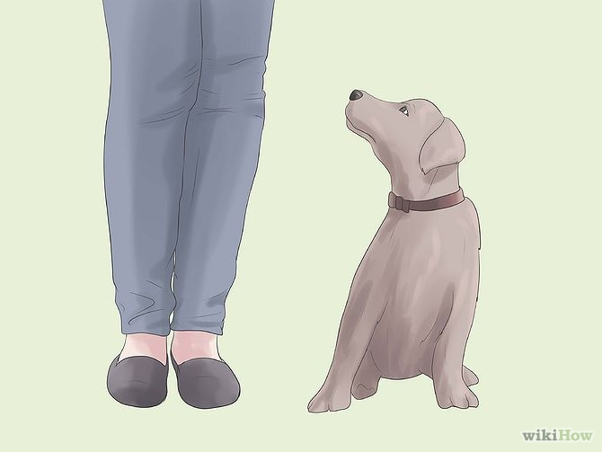
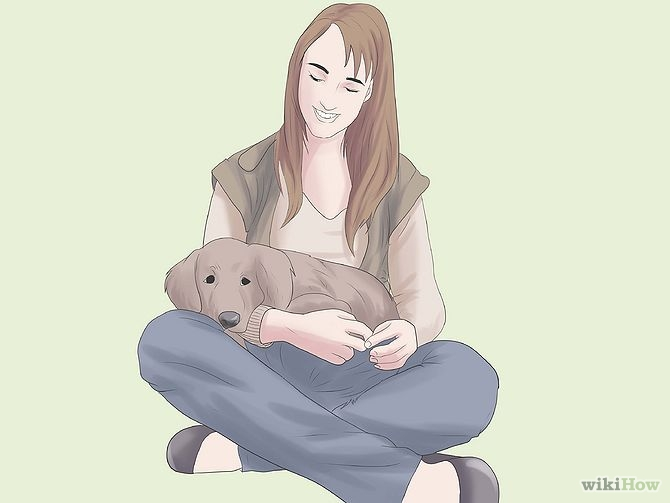
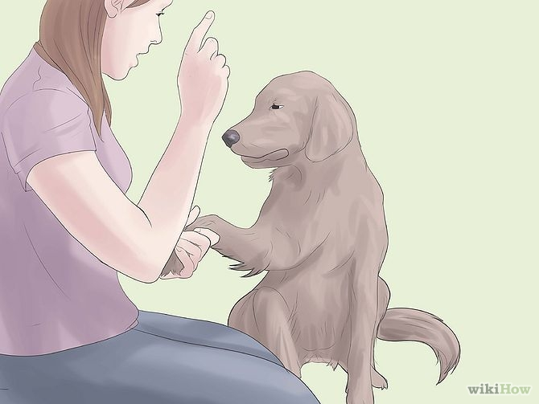
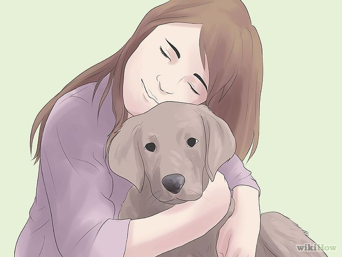
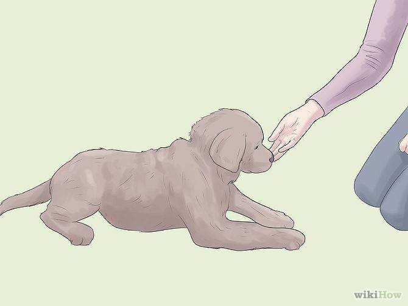
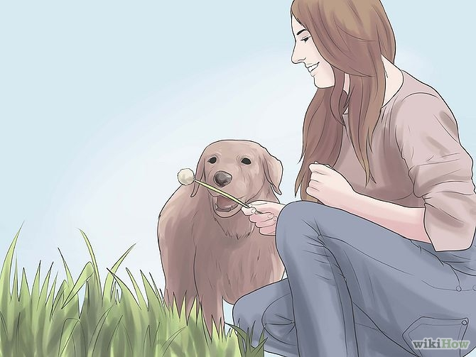

|
|
|
|
|
|
|
|
|  | 1. If you're going to get a puppy, ask yourself and your family some questions. Are you ready to make a commitment? Do you have enough time on your hands for a dog? Remember, taking care of a dog is a full time job. They're trusting you to make their lives fulfilled! . |
| 2. If you already have a puppy and your dog is happy and calm, your puppy is in great shape. Is there anything you think you can improve on? If not, you probably don't need this article. However, if your puppy has some bad habits you want to break, you can look at other articles on wikiHow which could help fix their bad habits. |  |
|  | 3. Exercise is important! It's the best way to keep your dog calm. You don't want a puppy bounding all around the house because they don't get enough exercise. It could also lead to aggression later on in their lives. There are many ways you can give your dog exercise that they'll love. You can play ball with them on a huge open field or a golf course (when it's closed later on in Fall). If you like to go for morning runs, bring him/her with you! Walks two times a day is great too. They should get exercise two times a day anyways. Depending on your puppy's breed, size and age, the amount of exercise needed will vary. . |
| 4. Enforce
some rules! There will definitely be behaviors
you do not want your dog to have. However you must
be consistent all the time when disciplining your dog.
For example, if your dog likes to jump up on you,
just push them off, say NO, and walk away. In time,
your dog will get the message and won't continue
to jump on people. - Don't let your dog beg, and never give him/her food. It's a bad habit and make them understand it will not be tolerated, and it doesn't work. - No barking either. This can scare away people and it may become a bad habit that might take a little while to fix. Give them more exercise too, because that may be part of the problem. - Try to fix any bad habits you don't like. Keep in mind, the ones above are simply examples of possible habits your dog may have. |
 |
|  | 5. You should form a strong bond between you and your dog. Your bond will strengthen the relationship (of course) and it will help your puppy or dog be happier and balanced. |
| 6. Show them you're in charge, otherwise they may see that position unfilled so they will try to take charge instead by instinct. Don't blame your dog for it! Plus, it won't help your situation. |  |
|  | 7. Give your dog as much affection and love as you want! It's a good part of the relationship but don't give them affection if they're doing something you don't want them to do, or else it will reinforce the behavior. Like begging or jumping up on you for example. |
| 8. Make sure your dog is calm and submissive before you give them anything. That way, they'll learn they'll only get what they need by being calm and submissive. You'll know when they are. Their ears will be back, tail down low and wagging, and their body will be relaxed. There's a difference between scared and submissive. If your dog is scared, her ears are back, tail between the legs, and sometimes cowering or shaking or just plain tense (not necessarily). |  |
|  | 9. Have fun! Dogs are great to have, just a big responsibility. Remember, your dog won't live forever, so while you have him/her, make the most of it! |
© All rights reserve to MK Pet Shop 2014 | Credits to Wikihow